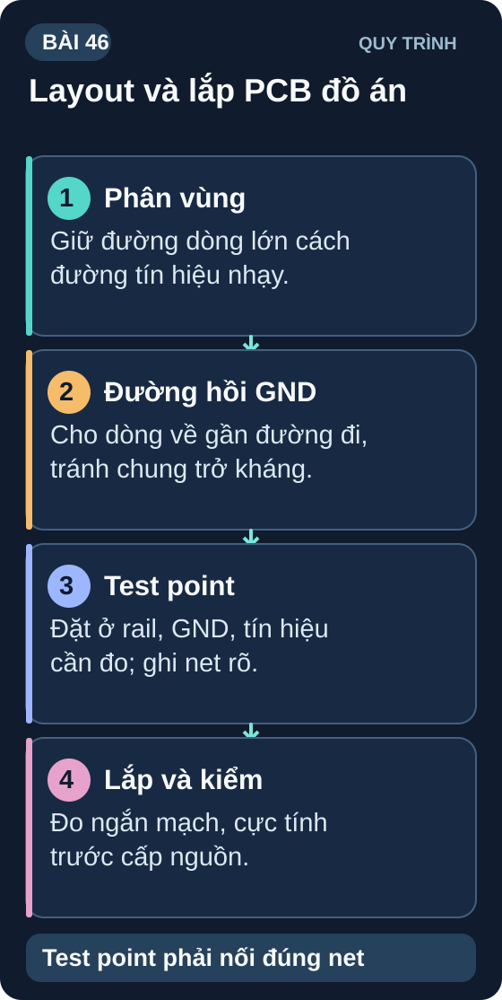

Đồ Án — PCB Layout & Assembly
Chuyển từ breadboard prototype sang PCB chuyên nghiệp — layout chuẩn, hàn và power-on test lần đầu.
- Áp dụng quy tắc layout nâng cao cho đồ án thực tế
- Phân chia vùng power và signal — tránh crosstalk
- Test point — thêm test pad để debug dễ hơn
- Via stitching cho ground plane — giảm EMI
- Xuất Gerber và gửi sản xuất (JLCPCB, PCBWay — 5–10 ngày)
- Assembly trên prototype PCB — hàn theo thứ tự IC trước
- Quy trình power-on lần đầu — current limited PSU
- Functional test theo test plan từ SRS

1. Quy tắc Layout nâng cao
| Quy tắc | Thực hiện trong KiCad |
|---|---|
| Tụ decoupling sát IC | Đặt 100nF <2mm từ chân VCC của mỗi IC, via xuống GND ngay tại chân |
| Phân vùng analog/digital | Khu analog (ADC, sensor) và digital (MCU, WiFi) không routing chồng lên nhau |
| Test points | Thêm pad 1,5mm tại VCC, GND, SDA, SCL, MOSI, MISO, SCK — dễ probe khi debug |
| Via stitching GND | Thêm via GND rải đều quanh board — nối GND plane F.Cu và B.Cu |
| Silk screen | Ghi rõ J1="IN+", J2="OUT", CN1="UART DEBUG", hướng linh kiện có cực |
| Edge keepout | Linh kiện cách mép board ≥2mm — tránh gãy khi cưa PCB |
2. Test Point — Debug Professional
- Trong schematic, chọn biểu tượng TestPoint của thư viện đang dùng, nối vào net cần đo và đặt mã riêng như
TP_SDA. - Gán footprint test point phù hợp cách đặt que đo, rồi cập nhật PCB từ schematic. Đặt điểm đo ở vị trí dễ tiếp cận, không tạo nguy cơ chạm tắt net lân cận.
- Ví dụ các net nên cân nhắc:
TP_3V3,TP_GND,TP_SDA,TP_SCL,TP_UART_TX,TP_UART_RXvàTP_ADC_BAT. - Trước khi đo, kiểm tra điện áp dự kiến và mốc tham chiếu. Đồng hồ số đo giữa hai điểm đã chọn; với máy hiện sóng để bàn, phải biết kẹp mass của probe có nối PE hay không trước khi gắn vào mạch.
3. Assembly Checklist — chỉ áp dụng sau khi duyệt phần cứng
Kiểm tra thiết kế: Đối chiếu schematic, BOM, package, cực tính, Gerber và test point của đúng revision. Khi chưa có board được duyệt, lập bảng kiểm trên tài liệu và dừng tại đây.
Nếu được duyệt chế tạo: Hàn từ linh kiện thấp đến cao: điện trở/tụ SMD → IC → connector → THT → header, theo hướng dẫn của part cụ thể.
Visual inspection: Dùng kính lúp kiểm mối hàn, cầu hàn và chiều linh kiện; ghi ảnh lỗi và cách sửa trước khi thử điện.
Continuity test: Kiểm GND và các net theo schematic. Điện trở GND↔VCC phụ thuộc tải/tụ trên board, nên không kết luận bằng ngưỡng >10kΩ cố định; mọi giá trị gần ngắn mạch không giải thích được phải xử lý trước cấp nguồn.
Current-limited power-on: Chỉ cấp nguồn khi điện áp, cực tính, dòng khởi động và dòng chờ dự kiến đã tính cho đúng board. Đặt giới hạn theo ngân sách đó, theo dõi từng rail và ngắt nếu vượt giới hạn hoặc nóng bất thường; không mặc định 100mA hay I_idle<50mA.
Functional test: Nếu cổng nguồn đạt, nạp firmware và kiểm từng yêu cầu SRS; với nhánh không có board, kiểm logic bằng test case/trace mô phỏng và ghi rõ chưa đo thật.
4. Gửi PCB sản xuất — JLCPCB / PCBWay
| Nhà sản xuất | Giá 5 PCB | Thời gian | Lưu ý |
|---|---|---|---|
| JLCPCB | $2 + ship ~$5–15 | 5–7 ngày sản xuất + vận chuyển | Upload Gerber zip, chọn 2-layer, FR4 |
| PCBWay | $5 + ship | Tương tự | Hỗ trợ tốt hơn cho thiết kế phức tạp |
| Elecrow | $4.9 + ship | 7–10 ngày | Dịch vụ tốt, nhiều màu soldermask |
I_idle không có dải "bình thường" chung cho mọi đồ án: ESP32 đổi dòng theo chế độ ngủ/WiFi, OLED đổi theo nội dung hiển thị, cảm biến và regulator có dòng riêng. Cộng mức tối thiểu/điển hình/tối đa theo đúng mã, trạng thái hoạt động và nguồn để lập khoảng kỳ vọng; so phép đo thật với khoảng đó. Nếu chênh lệch, kiểm rail và chức năng trước khi kết luận có short hay MCU không chạy.